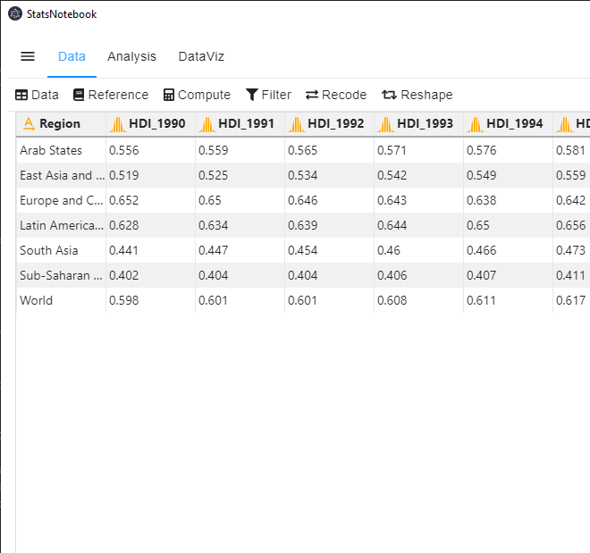
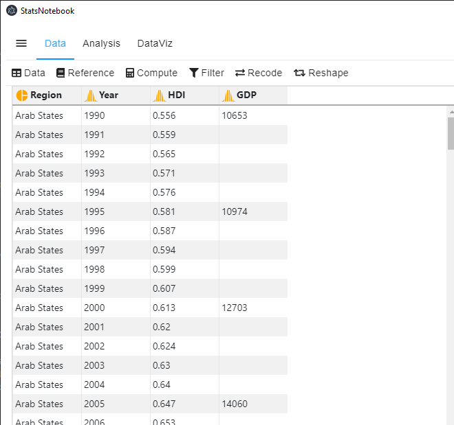
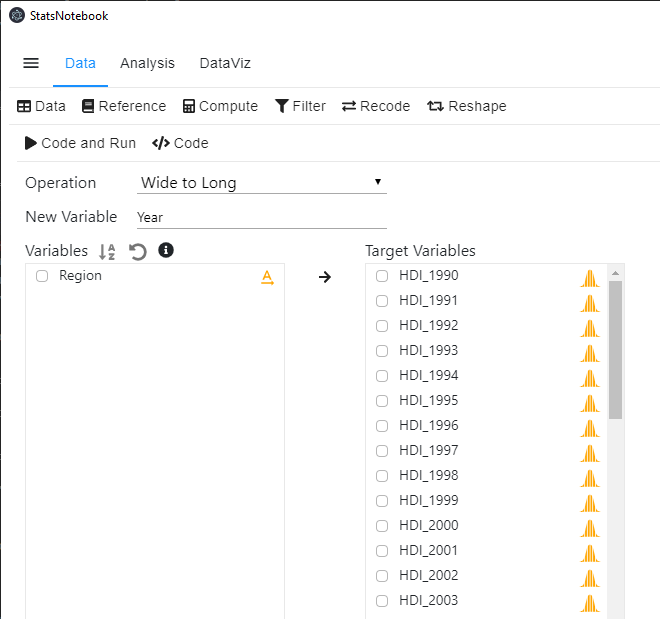
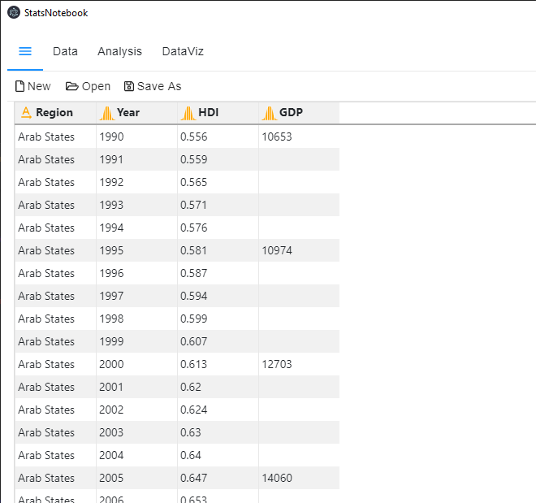
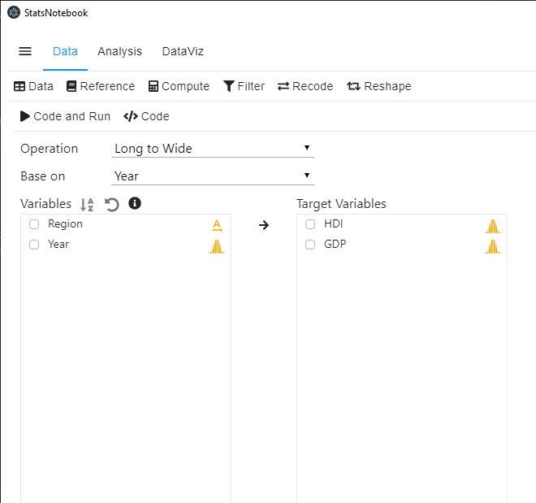

Tags: Data Management, R code
Follow our Facebook page or our developer’s Twitter for more tutorials and future updates.
The tutorial is based on R and StatsNotebook, a graphical interface for R.
This tutorial will provide step-by-step guide on reshaping the data from
We will use the built-in Human Development Index dataset in this example. This dataset can be loaded into StatsNotebook using instruction here. This is a data from the United Nations Development Programmes (UNDP).
This dataset contains the following variables
This dataset is in wide format because each row contains data from multiple years (e.g. from 1990 to 2018).

Many analyses require the data to be in long format (see below) such that each row represents data from one year.

In StatsNotebook, the conversion from wide to long format can be done with a few clicks. However, the variable names need to be in the format “VariableName_Index”, such that the variable name is followed by an underscore and then an index (e.g. Measurement_1, Measurement_2, etc).
To convert the data from wide to long format,

currentDataset <- currentDataset %>% pivot_longer(c("HDI_1990", "HDI_1991", "HDI_1992", "HDI_1993", "HDI_1994", "HDI_1995", "HDI_1996", "HDI_1997", "HDI_1998", "HDI_1999", "HDI_2000", "HDI_2001", "HDI_2002", "HDI_2003", "HDI_2004", "HDI_2005", "HDI_2006", "HDI_2007", "HDI_2008", "HDI_2009", "HDI_2010", "HDI_2011", "HDI_2012", "HDI_2013", "HDI_2014", "HDI_2015", "HDI_2016", "HDI_2017", "HDI_2018", "GDP_1990", "GDP_1995", "GDP_2000", "GDP_2005", "GDP_2010", "GDP_2011", "GDP_2012", "GDP_2013", "GDP_2014", "GDP_2015", "GDP_2016", "GDP_2017", "GDP_2018"),
names_to = c(".value", "Year"),
names_pattern = "(.*)_(.*)")
"Chan, G. and StatsNotebook Team (2020). StatsNotebook. (Version 0.1.0) [Computer Software]. Retrieved from https://www.statsnotebook.io"
"R Core Team (2020). The R Project for Statistical Computing. [Computer software]. Retrieved from https://r-project.org"
We will use the long format Human Development Index dataset for this example. This dataset can be downloaded from here. This is a dataset from the United Nations Development Programmes and contains the following variables.

To convert the data from long to wide format,

currentDataset <- currentDataset %>% pivot_wider(names_from = Year,
names_glue = "{.value}_{Year}",
values_from = c("HDI", "GDP"))
"Chan, G. and StatsNotebook Team (2020). StatsNotebook. (Version 0.1.0) [Computer Software]. Retrieved from https://www.statsnotebook.io"
"R Core Team (2020). The R Project for Statistical Computing. [Computer software]. Retrieved from https://r-project.org"
The data will look like the following figure if the data is reshaped successfully.
Follow our Facebook page or our developer’s Twitter for more tutorials and future updates.